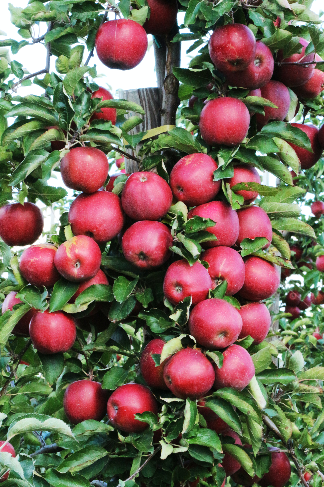
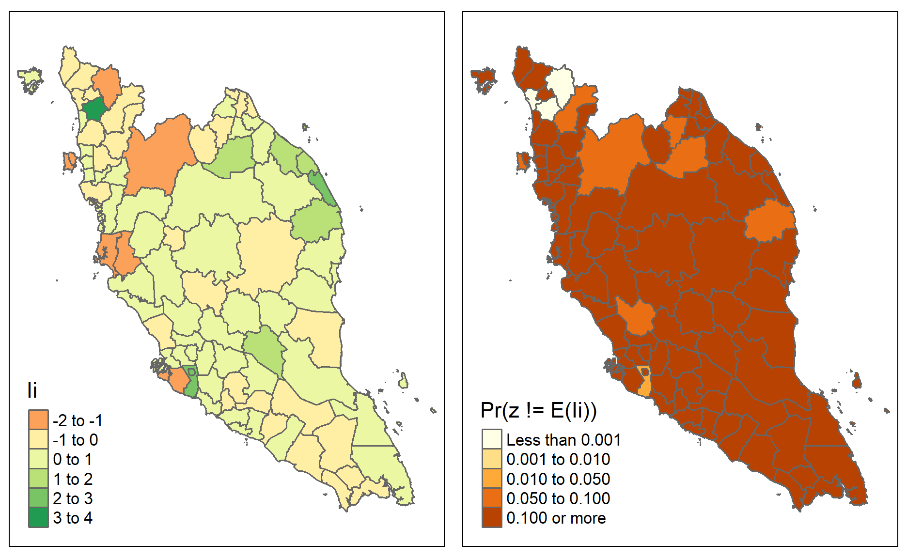

Photo by Marek Studzinski on Unsplash
Previously, we explored how we could check whether there is any spatial autocorrelation within the dataset.
In this post, I will be exploring how to check the local measures of spatial autocorrelation.
What is local spatial autocorrelation?
In this post, I will use local Moran’s I to perform analysis.
Local Moran’s I
The formula can be written as follows:
\[I_i=\frac{x_i-\bar{X}}{m_2}\sum_jw_{ij}(x_j-\bar{X})\]
\[m_2=\frac{\sum_i(x_j-\bar{X})^2}{n}\]
where
n is the total number of observations (spatial objects)
\(x_i\) is the attribute value of feature i
\(x_j\) is the attribute value of feature j
\(\bar{X}\) is the mean of this attribute
\(w_{ij}\) is the spatial weight between feature i and j
\(m_2\) is the constant for all locations. It is a consistent but not unbiased estimate of the variance
The interpretation of local Moran’s values is similar to global Moran’s I values.
If the p-value is less than 0.05, we will reject the null hypothesis and conclude that there is statistical evidence that there is spatial autocorrelation.
If the z-value is negative, it suggests spatial outlier presence
If the z-value is positive, it indicates intense clustering of either low or high values
Demonstration
I will download Malaysia shape files from this link.
For more explanations on shape files, please refer to my previous post.
I will also use the total number of newborn babies data between 2015 and 2021.
Setup the environment
First, I will set up the environment by calling the necessary packages.
pacman::p_load(tidyverse, sf, spdep, tmap, janitor, crosstalk)tmap_mode('plot')set.seed(1234)Import the data
Import shp files
Next, I will import the dataset into the environment.
In this demonstration, I will focus on the total number of new birth in West Malaysia.
msia_map <-
st_read(dsn = "data", layer = "MYS_adm2") %>%
filter(!NAME_1 %in% c("Sabah", "Sarawak", "Labuan"))Reading layer `MYS_adm2' from data source
`C:\Users\jaspe\OneDrive\Documents\2_Data Science\98_my-blog\_posts\2023-03-19-local-spatial-autocorrelation\data'
using driver `ESRI Shapefile'
Simple feature collection with 144 features and 14 fields
Geometry type: MULTIPOLYGON
Dimension: XY
Bounding box: xmin: 99.64072 ymin: 0.855001 xmax: 119.2697 ymax: 7.380556
Geodetic CRS: WGS 84Import Malaysia 2015 - 2021 birth rate dataset
I will also import the dataset on 2015 - 2021 birth rate by the administrative district into the environment.
msia_birth <-
read_csv("data/live-births-by-state-administrative-district-and-sex-2015-2021.csv") %>%
clean_names() %>%
filter(year != 2021) %>%
group_by(year, state, administrative_district) %>%
summarize(total = sum(value)) %>%
ungroup() %>%
pivot_wider(names_from = year,
names_prefix = "total_birth_",
values_from = total,
values_fill = 0) %>%
# change the first letter of each word to capital letter
mutate(administrative_district = str_to_title(administrative_district)) %>%
# recode the districts
mutate(administrative_district_recoded =
case_when(administrative_district == "Mualim" ~ "Batang Padang",
administrative_district == "Kuala Nerus" ~ "Kuala Terengganu",
administrative_district == "Bagan Datuk" ~ "Hilir Perak",
administrative_district == "Kecil Lojing" ~ "Gua Musang",
administrative_district == "Selama" ~ "Larut and Matang",
administrative_district == "Larut & Matang" ~ "Larut and Matang",
administrative_district == "Johor Bahru" ~ "Johor Baharu",
administrative_district == "Kluang" ~ "Keluang",
administrative_district == "Kulai" ~ "Kulaijaya",
administrative_district == "Tangkak" ~ "Ledang",
administrative_district == "Pasir Puteh" ~ "Pasir Putih",
is.na(administrative_district) == TRUE ~ state,
TRUE ~ administrative_district)) %>%
# remove the string so that it can be matched with the naming stated in map data frame
mutate(administrative_district_recoded =
str_replace(administrative_district_recoded, "W.P. ", "")) %>%
# sum the total number of birth by the recoded administrative districts
group_by(state, administrative_district_recoded) %>%
summarise_at(c("total_birth_2015",
"total_birth_2016",
"total_birth_2017",
"total_birth_2018",
"total_birth_2019",
"total_birth_2020"),
function(x) sum(x)) %>%
ungroup() %>%
mutate(change_in_birth_2015_2020 = total_birth_2020/total_birth_2015 - 1)Join the datasets together
As the map is imported as simple features (i.e. one of the data types), this allows us to use the left_join function with the total new birth data file.
msia_map_birth <-
msia_map %>%
left_join(msia_birth,
by = c("NAME_2" = "administrative_district_recoded"))I will calculate the longitude and latitude.
longitude <- map_dbl(msia_map$geometry, ~st_centroid(.x)[[1]])
latitude <- map_dbl(msia_map$geometry, ~st_centroid(.x)[[2]])
coords <- cbind(longitude, latitude)Spatial weights
Next, I will derive the spatial weights by using K nearest neighbors.
kneigh <- knearneigh(coords)
knn <- knn2nb(kneigh)
weight_list_knn <- nb2listw(knn,
style = "W",
zero.policy = TRUE)Local Spatial Autocorrelation
Local Moran’s I
Now, I will calculate the local Moran I values.
locan_moran <-
localmoran(msia_map_birth$change_in_birth_2015_2020,
listw = weight_list_knn)
locan_moran Ii E.Ii Var.Ii Z.Ii Pr(z != E(Ii))
1 -0.255918361 -2.928453e-03 2.540293e-01 -0.50195095 0.6157020254
2 -0.407279506 -1.035266e-02 8.913573e-01 -0.42042114 0.6741778248
3 -0.287809568 -3.824506e-03 3.314594e-01 -0.49326500 0.6218253588
4 0.424312241 -2.351376e-03 2.040887e-01 0.94444383 0.3449428924
5 -0.170060580 -2.166387e-03 1.880674e-01 -0.38714971 0.6986453762
6 -0.284783406 -3.870537e-04 3.366064e-02 -1.55011123 0.1211148213
7 0.161828068 -9.258391e-04 8.047342e-02 0.57372686 0.5661526493
8 0.093039617 -3.023902e-03 2.622840e-01 0.18757399 0.8512106135
9 -0.170060580 -1.804988e-03 1.567505e-01 -0.42497660 0.6708537306
10 -0.060985607 -1.299232e-03 1.128863e-01 -0.17764565 0.8590012686
11 -0.788797632 -3.721631e-02 3.117319e+00 -0.42568206 0.6703395377
12 0.088139506 -7.841682e-04 6.816913e-02 0.34058343 0.7334172040
13 -0.026641998 -6.215507e-07 5.407487e-05 -3.62292138 0.0002912944
14 -0.173167407 -1.037058e-03 9.013044e-02 -0.57335250 0.5664060481
15 -0.040130857 -6.175640e-05 5.372475e-03 -0.54666642 0.5846079275
16 -0.006598121 -1.652334e-06 1.437528e-04 -0.55017809 0.5821972275
17 0.766514936 -2.253027e-02 1.915971e+00 0.57004275 0.5686486999
18 -1.667680625 -2.435391e-03 2.113630e-01 -3.62212727 0.0002921903
19 3.760882629 -1.238576e-02 1.064214e+00 3.65765846 0.0002545299
20 -0.026641998 -1.544046e-01 1.135905e+01 0.03790815 0.9697609115
21 -0.788797632 -2.260482e-03 1.962174e-01 -1.77562203 0.0757952361
22 0.598447384 -3.909602e-03 3.388056e-01 1.03485303 0.3007375547
23 -0.035527887 -1.747523e-03 1.517688e-01 -0.08671078 0.9309014054
24 0.873236250 -1.749050e-02 1.495059e+00 0.72847620 0.4663221342
25 -0.804003827 -3.554695e-02 2.982653e+00 -0.44495709 0.6563507667
26 -0.035527887 -9.766053e-05 8.495636e-03 -0.38439345 0.7006868549
27 1.232301772 -5.894736e-03 5.098190e-01 1.73412972 0.0828950693
28 0.606381613 -3.483156e-02 2.924794e+00 0.37493399 0.7077095628
29 0.050419432 -3.519492e-03 3.051181e-01 0.09764911 0.9222109291
30 0.135822268 -1.427323e-03 1.239999e-01 0.38976287 0.6967119037
31 -0.795872240 -2.458764e-03 2.133865e-01 -1.71757636 0.0858739159
32 -0.038743570 -2.078181e-03 1.804260e-01 -0.08631907 0.9312127785
33 0.065261528 -5.396032e-04 4.692015e-02 0.30377615 0.7612984408
34 0.130622067 -1.309666e-02 1.124487e+00 0.13553022 0.8921926711
35 0.192117491 -2.833096e-02 2.394963e+00 0.14244841 0.8867258262
36 0.130622067 -1.761472e-04 1.532210e-02 1.05667789 0.2906586210
37 0.721971960 -1.035466e-02 8.915276e-01 0.77559932 0.4379855996
38 0.218924028 -1.225608e-02 1.053211e+00 0.22526453 0.8217734914
39 -0.146205454 -5.287353e-04 4.597565e-02 -0.67940108 0.4968837647
40 0.406607235 -4.089416e-03 3.543243e-01 0.68995489 0.4902225537
41 -0.146205454 -5.466281e-03 4.729669e-01 -0.20464429 0.8378500527
42 0.449539545 -6.681555e-03 5.774114e-01 0.60038897 0.5482470388
43 -0.954340169 -4.346586e-03 3.765093e-01 -1.54822056 0.1215692028
44 0.217213428 -3.839666e-03 3.327683e-01 0.38320012 0.7015713913
45 1.463297207 -2.362199e-02 2.006567e+00 1.04968865 0.2938612844
46 -0.657191913 -8.717226e-03 7.517875e-01 -0.74790335 0.4545184578
47 -0.757911282 -1.546074e-02 1.324288e+00 -0.64517307 0.5188150335
48 0.370166726 -4.219181e-03 3.655200e-01 0.61924702 0.5357536377
49 0.569104956 -5.023536e-03 4.348521e-01 0.87063936 0.3839510967
50 0.664443090 -3.592822e-02 3.013452e+00 0.40345602 0.6866127839
51 -0.244022451 -3.744820e-03 3.245793e-01 -0.42174791 0.6732090302
52 -0.074495922 -8.125827e-04 7.063725e-02 -0.27723777 0.7815975396
53 0.143733369 -2.149967e-03 1.866449e-01 0.33767396 0.7356089035
54 0.217213428 -1.661434e-03 1.443046e-01 0.57617688 0.5644956276
55 0.245342111 -6.002743e-04 5.219252e-02 1.07653771 0.2816868434
56 0.274277547 -1.355806e-02 1.163559e+00 0.26683966 0.7895926201
57 -1.918144851 -1.336696e-02 1.147381e+00 -1.77824085 0.0753643057
58 0.514070773 -4.556588e-02 3.783598e+00 0.28770916 0.7735693814
59 -0.221212465 -8.437486e-03 7.278677e-01 -0.24939879 0.8030523230
60 0.128876654 -6.698988e-03 5.789077e-01 0.17818740 0.8585758050
61 0.128876654 -3.352296e-04 2.915520e-02 0.75673610 0.4492079836
62 0.289988711 -1.347573e-03 1.170808e-01 0.85143534 0.3945275696
63 -1.390469117 -2.163763e-02 1.841742e+00 -1.00863865 0.3131479660
64 -1.390469117 -1.208137e-02 1.038380e+00 -1.35267412 0.1761597633
65 -0.040130857 -3.525965e-03 3.056773e-01 -0.06620755 0.9472125879
66 -1.540161952 -8.074053e-03 6.967710e-01 -1.83543344 0.0664414932
67 0.088139506 -1.339477e-03 1.163784e-01 0.26229192 0.7930963915
68 0.052810130 -3.562425e-03 3.088269e-01 0.10144022 0.9192010139
69 0.052810130 -1.058502e-04 9.207995e-03 0.55144767 0.5813268334
70 -1.540161952 -3.972321e-02 3.318639e+00 -0.82364161 0.4101432249
71 2.678019169 -6.179080e-02 5.043625e+00 1.21996974 0.2224763477
72 0.414484487 -4.304722e-02 3.583892e+00 0.24168170 0.8090268139
73 0.164812300 -6.806248e-03 5.881133e-01 0.22378641 0.8229235038
74 0.542214663 -9.234226e-04 8.026358e-02 1.91712748 0.0552217384
75 0.336404225 -1.433781e-02 1.229505e+00 0.31631710 0.7517618306
76 -1.847440570 -2.940610e-02 2.483100e+00 -1.15373216 0.2486099955
77 -0.022188928 -7.209004e-05 6.271381e-03 -0.27928103 0.7800291595
78 0.065261528 -1.067193e-03 9.274672e-02 0.21779723 0.8275871054
79 0.274277547 -7.502156e-04 6.521979e-02 1.07692839 0.2815122583
80 2.678019169 -1.569302e-02 1.343867e+00 2.32366207 0.0201436128
81 0.290569697 -7.998001e-03 6.902609e-01 0.35936534 0.7193218036
82 1.540231871 -8.617752e-03 7.432833e-01 1.79652001 0.0724118528
83 0.193665731 -2.844657e-04 2.474148e-02 1.23304074 0.2175605636
84 0.529030022 -4.391064e-03 3.803451e-01 0.86493066 0.3870768486
85 1.591226637 -1.782702e-02 1.523302e+00 1.30369960 0.1923360265
86 2.215279271 -3.722042e-02 3.117651e+00 1.27570725 0.2020590233
87 1.591226637 -1.920386e-02 1.638651e+00 1.25805252 0.2083727627
attr(,"call")
localmoran(x = msia_map_birth$change_in_birth_2015_2020, listw = weight_list_knn)
attr(,"class")
[1] "localmoran" "matrix" "array"
attr(,"quadr")
mean median pysal
1 High-Low High-Low High-Low
2 High-Low High-Low High-Low
3 Low-High Low-High Low-High
4 High-High High-High High-High
5 Low-High Low-High Low-High
6 Low-High Low-High Low-High
7 Low-Low Low-Low Low-Low
8 Low-Low Low-Low Low-Low
9 High-Low High-Low High-Low
10 High-Low High-Low High-Low
11 High-Low High-Low High-Low
12 High-High High-High High-High
13 High-Low Low-Low High-Low
14 High-Low High-Low High-Low
15 Low-High Low-High Low-High
16 High-Low High-Low High-Low
17 High-High High-High High-High
18 High-Low High-Low High-Low
19 Low-Low Low-Low Low-Low
20 Low-High Low-High Low-High
21 Low-High Low-High Low-High
22 Low-Low Low-Low Low-Low
23 High-Low High-Low High-Low
24 High-High High-High High-High
25 High-Low High-Low High-Low
26 Low-High Low-High Low-High
27 High-High High-High High-High
28 High-High High-High High-High
29 Low-Low Low-Low Low-Low
30 High-High High-High High-High
31 Low-High Low-High Low-High
32 High-Low High-Low High-Low
33 Low-Low Low-Low Low-Low
34 High-High High-High High-High
35 High-High High-High High-High
36 High-High High-High High-High
37 Low-Low Low-Low Low-Low
38 Low-Low Low-Low Low-Low
39 Low-High Low-High Low-High
40 High-High High-High High-High
41 High-Low High-Low High-Low
42 High-High High-High High-High
43 Low-High Low-High Low-High
44 Low-Low Low-Low Low-Low
45 Low-Low Low-Low Low-Low
46 High-Low High-Low High-Low
47 Low-High Low-High Low-High
48 High-High High-High High-High
49 High-High High-High High-High
50 Low-Low Low-Low Low-Low
51 Low-High Low-High Low-High
52 High-Low High-Low High-Low
53 High-High High-High High-High
54 Low-Low Low-Low Low-Low
55 Low-Low Low-Low Low-Low
56 Low-Low Low-Low Low-Low
57 Low-High Low-High Low-High
58 High-High High-High High-High
59 Low-High Low-High Low-High
60 Low-Low Low-Low Low-Low
61 Low-Low Low-Low Low-Low
62 Low-Low Low-Low Low-Low
63 Low-High Low-High Low-High
64 High-Low High-Low High-Low
65 High-Low High-High High-Low
66 High-Low High-Low High-Low
67 High-High High-High High-High
68 Low-Low Low-Low Low-Low
69 Low-Low Low-Low Low-Low
70 Low-High Low-High Low-High
71 Low-Low Low-Low Low-Low
72 Low-Low Low-Low Low-Low
73 Low-Low Low-Low Low-Low
74 Low-Low Low-Low Low-Low
75 Low-Low Low-Low Low-Low
76 High-Low High-Low High-Low
77 High-Low High-Low High-Low
78 Low-Low Low-Low Low-Low
79 Low-Low Low-Low Low-Low
80 Low-Low Low-Low Low-Low
81 High-High High-High High-High
82 High-High High-High High-High
83 High-High High-High High-High
84 High-High High-High High-High
85 High-High High-High High-High
86 High-High High-High High-High
87 High-High High-High High-HighVisualization
To visualize the result, I will merge it with the map data.
locan_moran_maps <-
bind_cols(msia_map_birth, locan_moran)First I will create the graph objects.
plot_local_moran <- tm_shape(locan_moran_maps) +
tm_polygons("Ii")
plot_local_moran_pvalue <- tm_shape(locan_moran_maps) +
tm_polygons("Pr(z != E(Ii))",
breaks=c(-Inf, 0.001, 0.01, 0.05, 0.1, Inf))Then I will visualize both graphs by using tmap_arrange function.
tmap_arrange(plot_local_moran,
plot_local_moran_pvalue,
ncol = 2)
From the results above, we observe the following:
Three of the states in the north have values that statistically different from the neighbors
Among the three states, the one in the middle seems to have a higher new birth rate than the surrounding
The state on the right seems to have a lower new birth rate than the surrounding
Conclusion
That’s all for the day!
Thanks for reading the post until the end.
Feel free to contact me through email or LinkedIn if you have any suggestions on future topics to share.
Refer to this link for the blog disclaimer.
Till next time, happy learning!

Photo by James Yarema on Unsplash